sector71 supernovae (22 total)
Each figure has three panels. The top panel shows the transient light curve, the middle panel shows the local background (estimated in an annulus), and the bottom panel shows a "background-model corrected" light curve. Details about the background model are in the README.
The vertical red line marks the time of discovery reported to TNS. Other useful metadata from TNS is in the figure title.
Note that the top and bottom panel are in magnitudes, while the middle panel is in differential flux units. The magnitudes are calibrated to the flux in the reference image used for image subtraction. Thus, flux from the host galaxy is included in these magnitudes.
3-sigma upper limits are plotted as triangles with no errorbars. A typical limiting magnitude is 19.6 in 30 minutes or 18.4 in 200 seconds (for low backgrounds).
The links allow you to download the light curve data as a text file.
More details in the README.
2023vpe 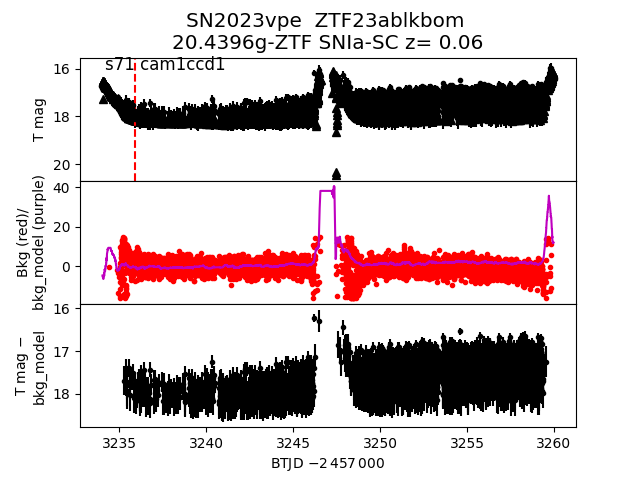 2023utk 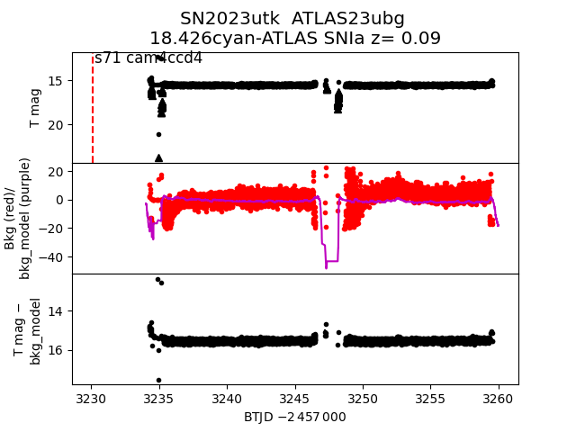 2023xth 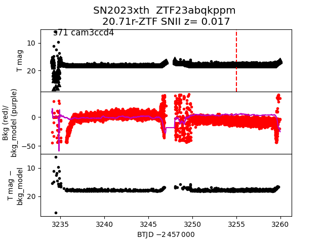 2023vyw 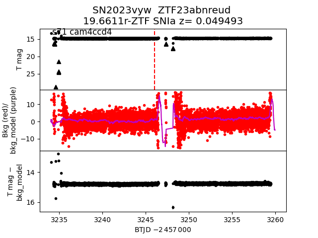 2023xhc 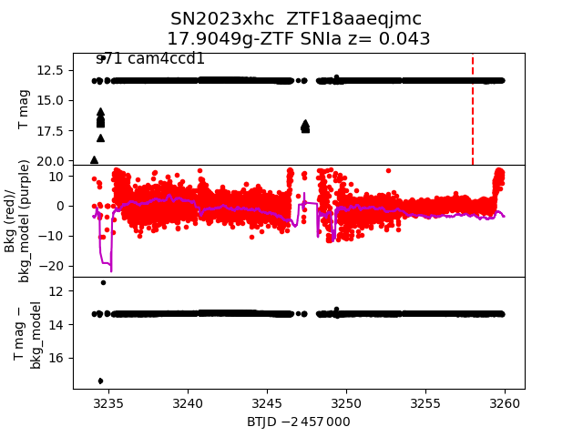 2023xip 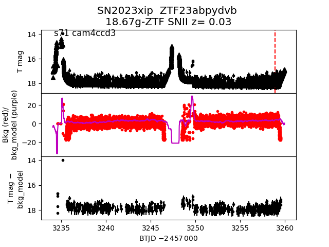 2023wbm 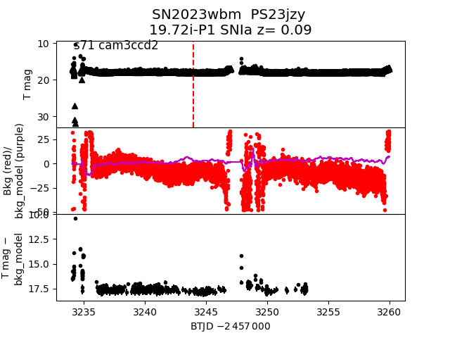 2023vjh 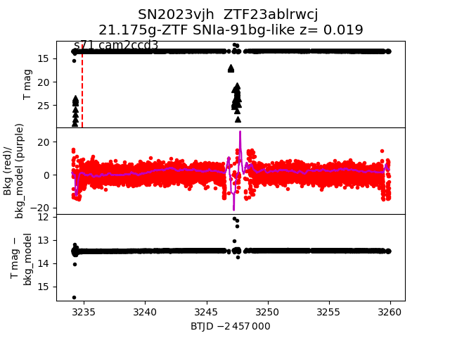 2023xxh 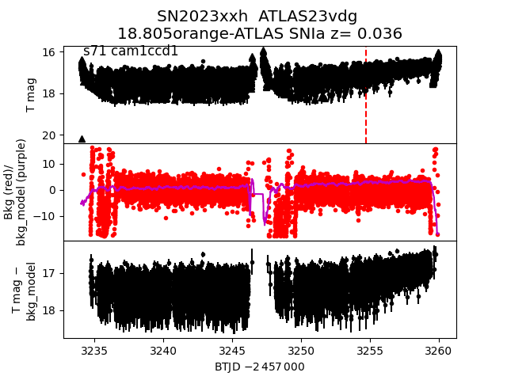 2023ysv 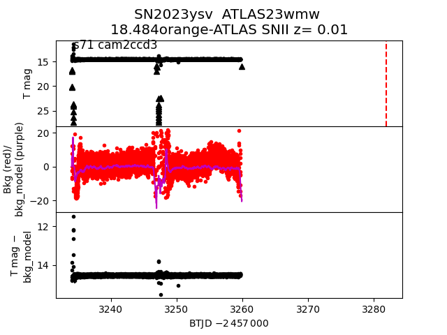 2023vpf 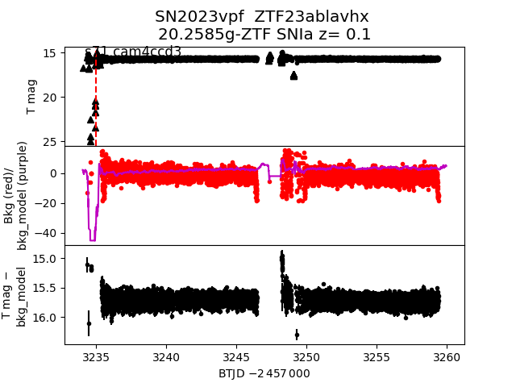 2023usf 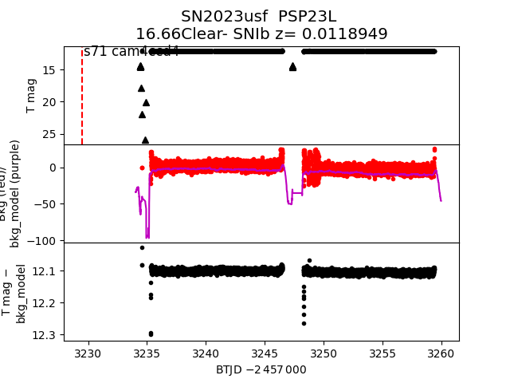 2023znl 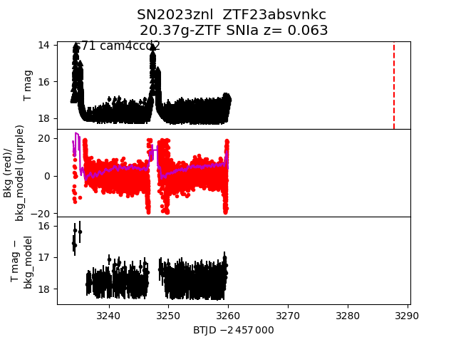 2023zdy 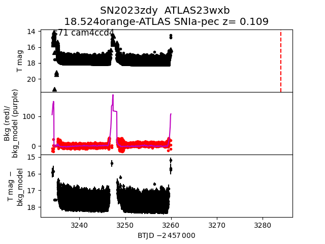 2023vck 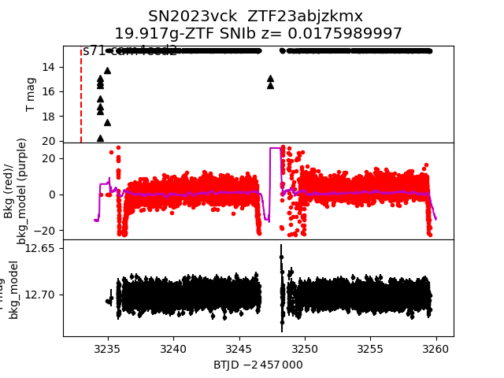 2023xmi 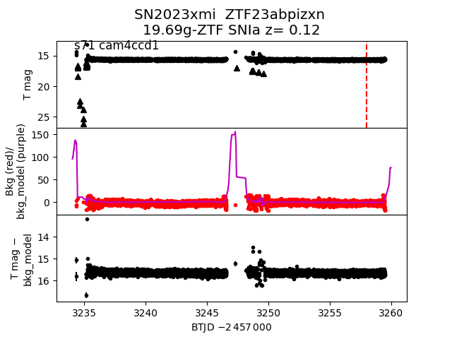 2023zut 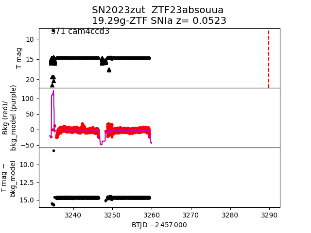 2023zii 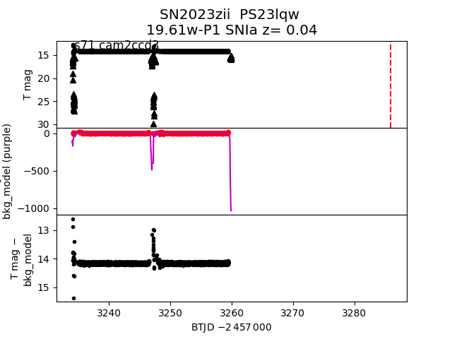 2023xqt 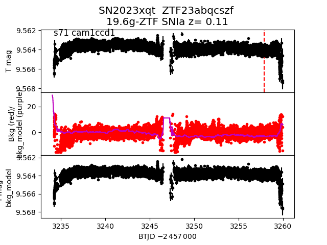 2023uti 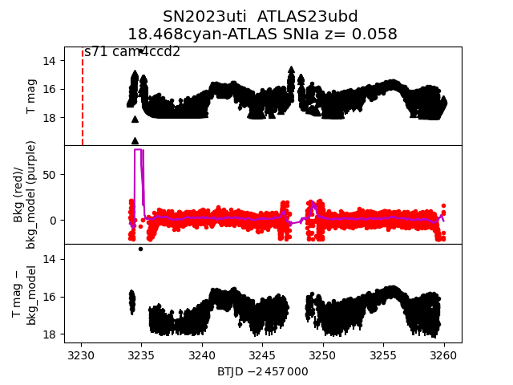 2023yyg 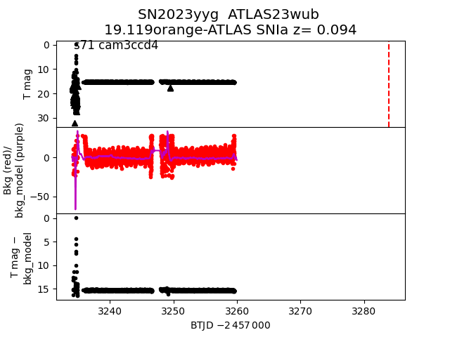 2023zno 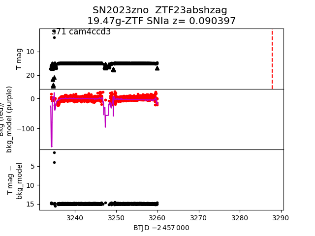